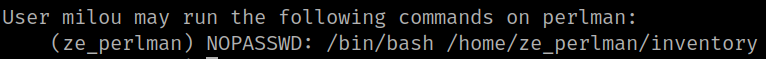
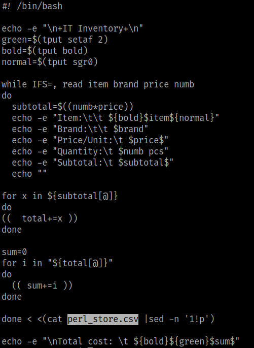
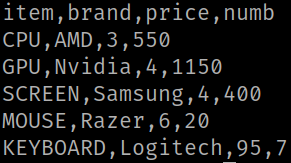

5.3 See sudoers
1. As “milou” user run the following command.
milou@perlman:~$ sudo -l
Output:

This user can run “home/ze_perlman/inventory” as “ze_perlman" with no password.
2. Look at the “inventory” content file.
milou@perlman:~$ cat /home/ze_perlman/inventory
Output:

You can see the “$num pcs” string. Pay attention a “pcs”.
3. Look at the “perl_store.csv” content file.
milou@perlman:~$ cat /home/ze_perlman/perl_store.csv
Output:
